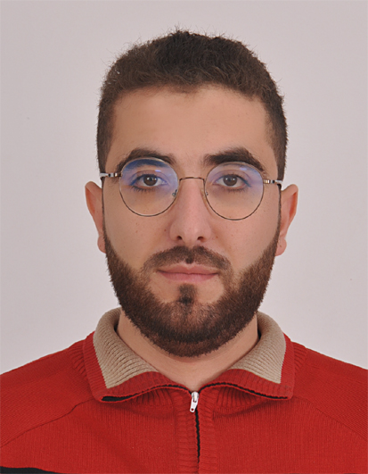

Hamza JAMAL

Combining a solid technical skillset and a strong managerial attitude, I'm welling to offer the best outcomes for your projects lifecycles
Work Experience
-
Since December 2022: Software Developer/Team Leader - Alten Delivery Center
- Developing and maintaining a bench test data's post-treatment tool
- Managing a 4 software developer team on a daily basis
- Review and evolution of the work process
-
November 2019 - Decemeber 2022: Technical Manager/Engineer - Mogesse Banking Solutions
- Supervise daily operations to ensure efficient execution of tasks and processes for a team of 15 members.
- Collaborate with development teams to translate functional requirements into robust and scalable technical solutions.
- Monitor closely technological advancements and market trends in the field of cash management and related technological solutions.
-
June 2017 - September 2019! Automation Engineer - Freelance
- Monitor the project realization cycle from study to commissioning.
- Programming of Industrial Programmable Logic Controllers (PLCs).
- Management of the project's technical team.
Education
- 2017: Master degree in electrical engineering - University Hassan II
- 2015: Bachelor degree in electrical engineering - university Hassan II
Skills
-
Technical Skills:
- Programming web, desktop and PLCs applications
- Software design and implementation
- Version control tools (Git - SVN)
-
Managerial Skills
- Inspire, motivate, and influence team members to achieve set goals.
- Prioritize tasks and manage resources effectively to meet deadlines.
- Plan, recruit, and train team members efficiently.
- Identify problems, analyze root causes, and develop effective solutions.
- Lead an IT project
-
Linguistic Skills
- English: Fluent
- French: Fluent
- Arabic: Fluent
Other